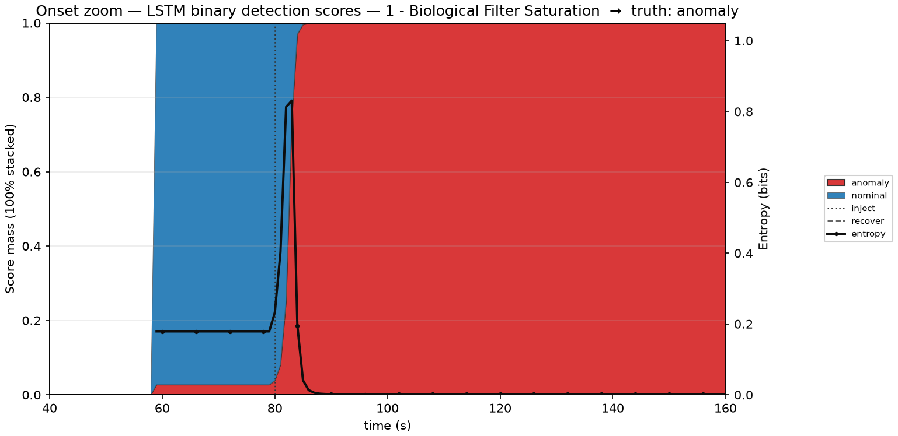
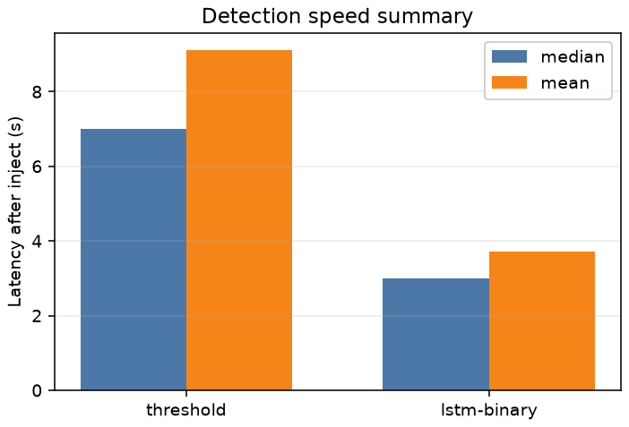
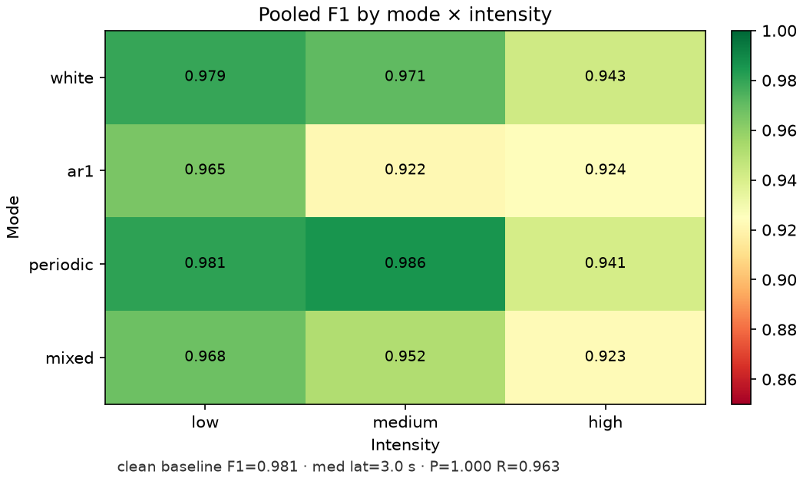

Threshold limits vs LSTM-binary (60 s × 68) · open loop · inject 80 s · ready ≥ 60 s
High AR1/mixed: precision drops via FA — detection rate stays 31/31
Faster onset vs noise false alarms — who gates diagnosis?
Limits are interpretable; LSTM is faster and covers the soft miss.
Noise mainly hurts precision (FA), not detection rate.